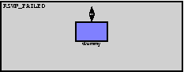

File: Nodes/MPLS/RSVP_FAILED.ned
Failed router. Discards all incoming traffic and generates nothing. Its interface (gates, parameters) is fully compatible with the RSVP_LSR router and node failures may thus be simulated by replacing the RSVP_LSR with FAILED_LSR.
The following diagram shows usage relationships between modules, networks and channels. Unresolved module (and channel) types are missing from the diagram. Click here to see the full picture.
If a module type shows up more than once, that means it has been defined in more than one NED file.
| Dummy | Implementation of a failed router. Does nothing and simply discards any incoming messages. |
| Name | Type | Description |
|---|---|---|
| namid | numeric | |
| peers | string | |
| routerId | string | |
| routingFile | string |
| Name | Direction | Description |
|---|---|---|
| in [ ] | input | |
| out [ ] | output |
| Name | Type | Description |
|---|
module RSVP_FAILED parameters: namid : numeric, peers : string, routerId : string, routingFile : string; gates: in: in[]; out: out[]; submodules: dummy: Dummy; gatesizes: in[sizeof(in)], out[sizeof(out)]; connections nocheck: for i=0..sizeof(out)-1 do in[i] --> dummy.in[i]; dummy.out[i] --> out[i]; endfor; endmodule